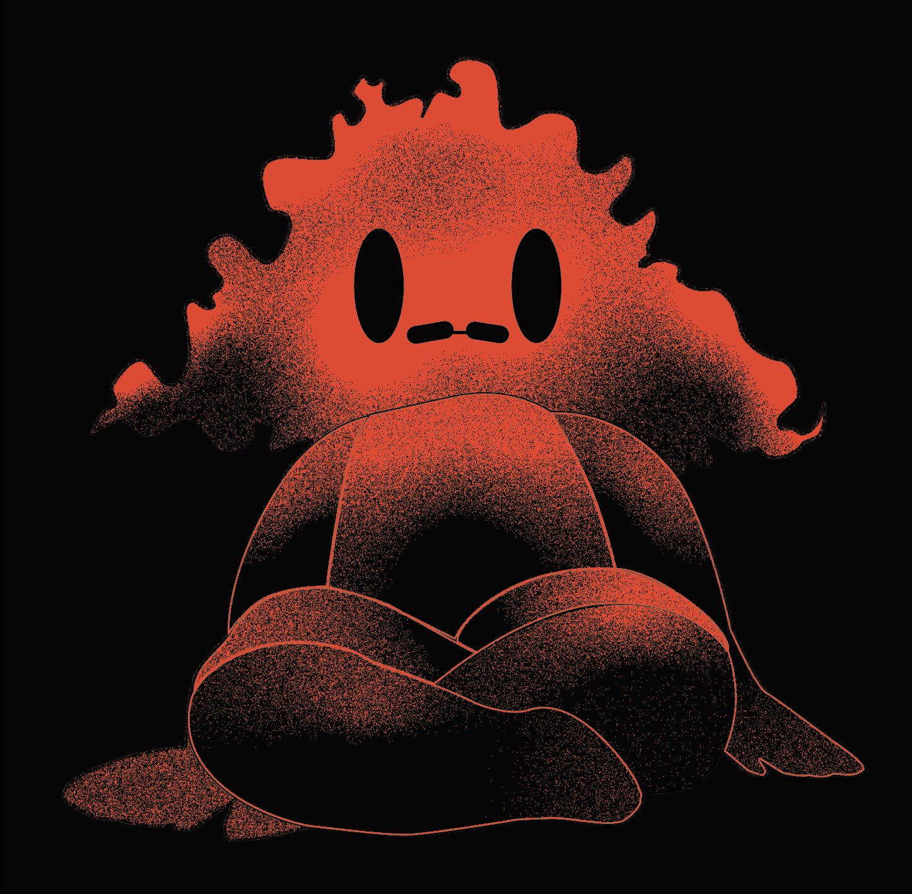

Artist's Icon
This piece was created in Illustrator using myself as inspiration for the design. I'm known by my family for having a large quantity of hair and glasses, so those are elements that were incorporated into the design. The color choices were made based on one of my favorite color combinations, red and black. The over all creaturesque look of the figure was chosen because of the my fondness of fantasy art.